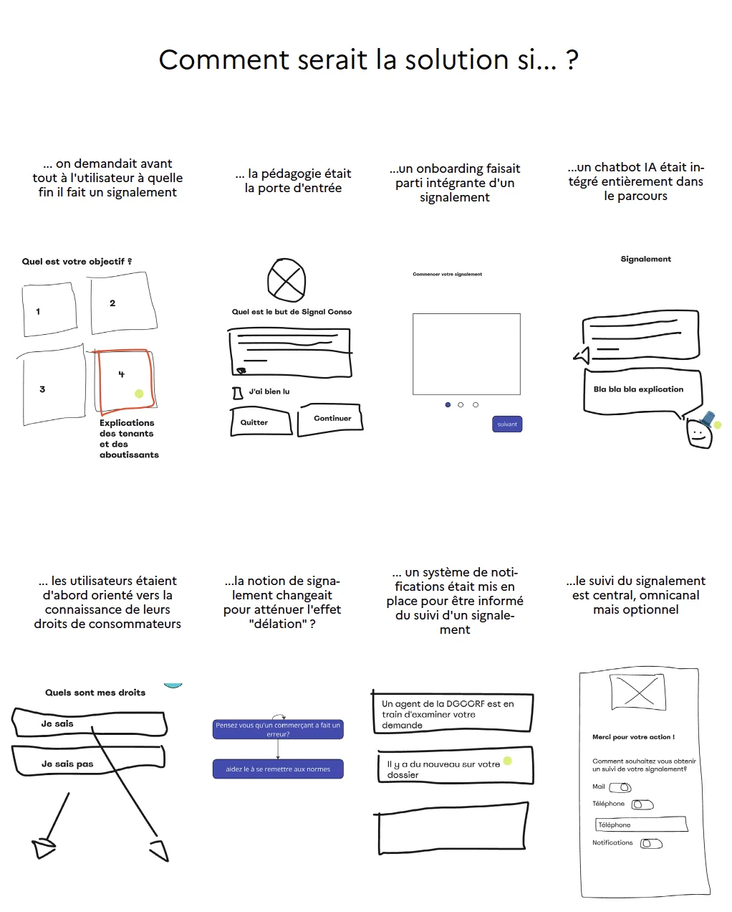
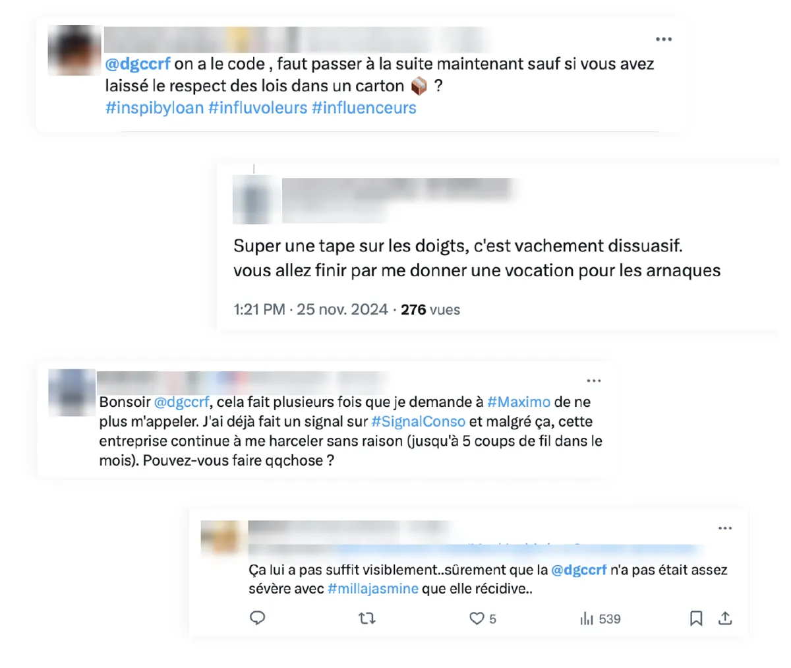
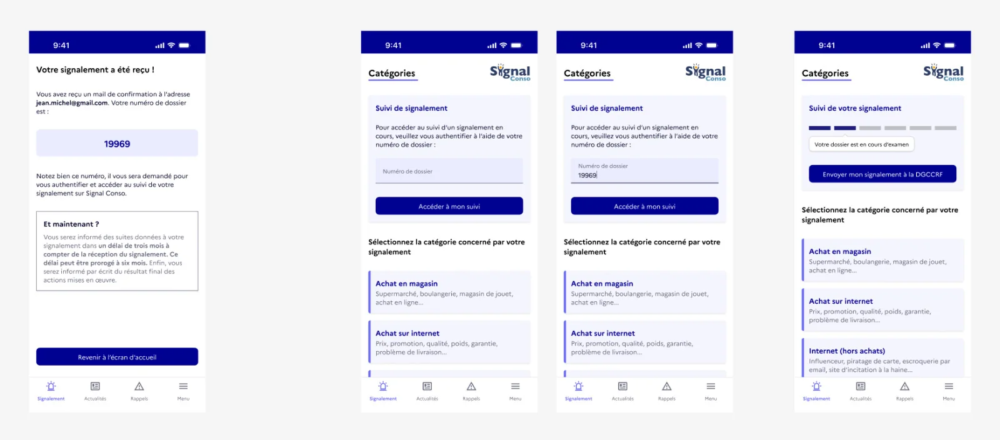

Framing
- ProblemDespite 240,000+ reports since 2021, only 18.4% of 18–30-year-olds think of state services for consumer issues; most contact brands directly.
- What I didLed the research strategy (audit, benchmark, 7 interviews, 120-response survey, social listening), then facilitated co-creation workshops with DGCCRF product, tech and communication leads.
- ImpactA simpler reporting journey, iterated through moderated usability testing; my recommendations were adopted for the next version of the service.
Context
Context and research question
SignalConso is the French government platform where consumers report fraud and unfair practices. The DGCCRF asked our team to increase engagement among 18–30-year-olds. Usage was real but narrow: 73.5% of the young people we surveyed knew the DGCCRF, yet most preferred to contact brands directly.
How can we get young people to take an active role in their consumption, when the tools provided by the DGCCRF are not adopted?
Objectives
- Make the DGCCRF better known among 18–30-year-olds.
- Get more visits and more reports on SignalConso from this age group.
- Simplify the journeys across the "Conso family" of tools: SignalConso, RappelConso and RéponseConso.
Constraints: GDPR and public-sector accessibility (RGAA), several institutional teams with their own priorities, no recruitment budget and a 3-month timeline.
How a report is processed today

Method
Approach and methodology
- 12platforms benchmarked
- 7interviews, 45 min, ages 18–30
- 120survey responses
- 10days of social listening
- 2co-creation workshops
With no recruitment budget, I combined low-cost methods that cross-checked each other.
| Method | Why this method | Sample |
|---|---|---|
| Heuristic audit | Find usability issues in the site and app fast, using Bastien & Scapin's ergonomic criteria. | Site + app |
| Benchmark | Learn how public and private platforms build trust (e.g. CFPB in the US, Consumidor.gov.br). | 12 platforms |
| Interviews | Understand motivations and barriers in depth. I wrote the script and ran every session. | n = 7 · 18–30 |
| Survey | Size what interviews revealed. Distributed through the DGCCRF's social media. | n = 120 |
| Social listening | Observe spontaneous conversations on X and TikTok during Black Friday. | 10 days |
Fieldwork: 7 remote interviews of 30–45 minutes with people aged 18–30, each followed by usability tasks on SignalConso; a survey of about thirty questions shared on the DGCCRF's social media. No incentives could be offered.
Co-creation workshops
With the DGCCRF on Miro: "How might we…" rounds, then prioritisation on an impact / feasibility matrix. Within the UX team, Crazy 8s and a vote focused the work on one question: how can we design a follow-up procedure clear enough to make users feel secure?

Data
What the data showed
Key survey findings
- Contact after-sales first73.5%Only 18.4% think of state services first
- Want to know their rights65.3%Would like to learn more about consumer rights
- Want a quick resolution77.6%57.1% seek compensation; 36.7% want the State to regulate more
- Would report greenwashing71.4%59.2% are interested in a guide to eco-labels
When young people know SignalConso, they come back to it: 34.1% had used it once or twice, and 12.2% more than five times in the past year. The challenge was awareness, not satisfaction.
What the audit showed
- Strengths: clear typography and good feedback, such as progress bars.
- No save and resume: users lost their progress mid-form.
- No follow-up: nothing told users what happened to their report.
- Fragmented journey: SignalConso, RappelConso and RéponseConso confused people.
What the benchmark taught us
| Platform | Strength | Takeaway for SignalConso |
|---|---|---|
| CFPB (USA) | Public complaint database, 15-day company response | Transparency builds trust |
| Consumidor.gov.br | Businesses must answer within 10 days | Accountability drives engagement |
| Yuka (France) | Trusted for product transparency | Educational content increases adoption |
What social listening revealed

What young consumers said
I hate chatbots, you never know if a real person will see your issue.
Interview · 18–30I gave up because I didn't know if my report would matter.
Interview · 18–30Why isn't the DGCCRF sanctioning fast fashion?
Social listening · X / TikTok, paraphrased
Two archetypes
Archetype 1
The eco-concerned but under-informed consumer
Goal: find affordable ways to consume better.
Motivation: align her environmental values with her shopping habits.
- Overwhelmed by online information and complex procedures
- Buys poor-quality products without knowing how to get redress
- Feels a gap between her values and her buying habits
Archetype 2
The helpless consumer
Goal: quick, intuitive complaint procedures on phone or computer.
Motivation: precise follow-up to feel guided and reassured.
- Struggles to find clear, verified sources
- Loses patience and often gives up before finishing
- Waiting without news after a complaint causes frustration and anxiety
Key insights
Key insights
Four insights explained the disengagement. Each one shaped a decision in the workshops and the prototype.
-
Insight 1: Awareness gap: people know the DGCCRF, but don't think of it
73.5% knew the DGCCRF, but only 18.4% thought of it when they had a consumer issue.
- Evidence
- Survey · n = 120
- Decision
- Goal-based onboarding: "What do you want to do?"
- Result
- A clearer single entry point in the prototype
-
Insight 2: Trust deficit: users doubt their report leads to action
With 240,000+ reports but no visible outcomes or public data, users felt they were reporting into a void.
- Evidence
- Interviews, audit, social listening, benchmark (CFPB)
- Decision
- Top workshop priority: follow-up transparency
- Result
- Follow-up dashboard, email / SMS updates and an "Impact tracker"
-
Insight 3: Ecology is a strong lever for this generation
61.2% said they would report environmentally harmful practices if they were guided, and greenwashing trended during Black Friday.
- Evidence
- Survey + 10 days of social listening
- Decision
- A dedicated, guided greenwashing reporting flow
- Result
- Eco-report flow in the prototype; KPI: +20% ecological reports
-
Insight 4: A fragmented journey across several state tools
SignalConso, RappelConso and RéponseConso looked like three unrelated services, and long forms without save and resume caused drop-offs.
- Evidence
- Heuristic audit + interviews
- Decision
- Step-by-step guidance with an AI assistant and human support
- Result
- A simpler reporting journey
Impact
Recommendations and impact
My recommendations were adopted for the next version of the service.
Decisions taken with the DGCCRF
- Step-by-step guidance, combining an AI assistant with access to human support and rights information.
- Customisable follow-up: users choose email or SMS updates and see what their report led to.
- An ecological focus with a guided greenwashing reporting flow.
- A communication axis to build awareness: targeted social media campaigns, partnerships with influencers and relevant organisations, and educational content (explainer videos, interactive guides).
Prototype
High-fidelity Figma prototype: 5 main screens, 15 variants and a UI kit, iterated through moderated usability testing.

Testing the prototype: the user's emotional journey
![Journey map of the prototype in seven steps, with actions, thoughts and emotions. Home screen: questioning, wonders whether a tracking number is needed. Choosing the type of report: relaxed, instant understanding. Addressing the report: confusion and stress, too much text, confused by the video and the word transcription. Chatbot appears: questioning, does not think of using the AI. Conversation with the chatbot: positive surprise, wonders whether a report made by the chatbot can be changed. Report summary: delighted that the chatbot pre-filled everything. Tracking number confirmation: enchanted and reassured.](../assets/signalconso-journey-map.webp)
- Low points to fix: too much text when addressing the report, a confusing video and "transcription" label, and an AI assistant that users do not think of opening.
- What worked: the AI conversation came as a positive surprise, the pre-filled summary delighted users, and the tracking number reassured them.
- Next iteration: shorten the content at the addressing step and make the assistant visible from the start of the journey.
How success will be measured
- Weekly reports, 18–30×2 → 72 / weekFrom about 36 eco-transition reports a week
- Ecological reports+20%Greenwashing and sustainability reports
- Reporting errorsFewerClearer, guided journeys
- AwarenessUpKeyword search volume, social engagement, calls to RéponseConso
Retrospective
What I learned and what I would do differently
- Without a recruitment budget, combining several light methods gave stronger evidence than any single one: the survey sized what interviews revealed, and social listening confirmed both.
- Running the prioritisation matrix with product owners, developers and communication leads together turned research findings into shared decisions instead of a report to defend.
- What I would do differently: recruit beyond the DGCCRF's own audience and personal networks to reduce bias, and test the follow-up dashboard earlier, before the prototype was fully designed.
Confidentiality. This project was carried out with the DGCCRF as part of the Gobelins programme. Verbatims are anonymised; on social media posts, names, handles and profile pictures are blurred.